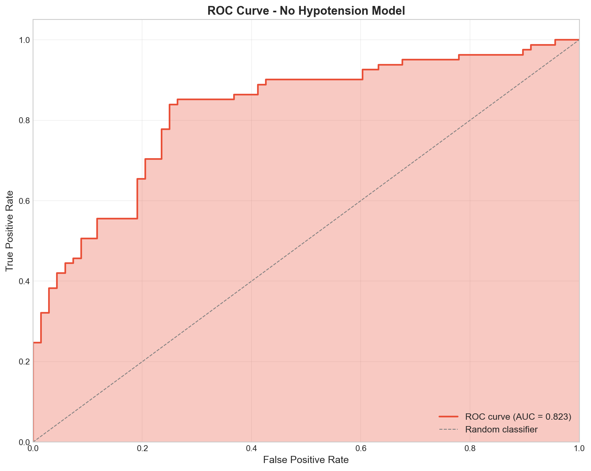

Figure 1A. ROC curve for Base Model (AUROC = 0.925)

Figure 1B. ROC curve for No-Hypotension Model (AUROC = 0.821)
Original Research Article with Model Comparison
🔬 UPDATED: Includes No-Hypotension Sensitivity AnalysisBackground: Febrile illness in cancer patients can range from self-limiting infections to life-threatening sepsis requiring intensive care. Early identification of patients requiring ICU admission is crucial for appropriate triage and resource allocation.
Objective: To develop and validate a machine learning model for predicting ICU admission in oncology patients presenting with febrile illness, and to assess residual predictive signal when excluding hemodynamic status.
Methods: We conducted a retrospective cohort study of 149 oncology patients. An XGBoost classifier was developed using 17 clinical features (Base Model) and compared to a sensitivity analysis excluding hypotension status (No-Hypotension Model). Performance was evaluated using repeated stratified 10×5-fold cross-validation with bootstrap confidence intervals.
Results: The Base Model achieved AUROC of 0.925 (95% CI: 0.913-0.936), outperforming established clinical scores including MASCC (0.656) and qSOFA (0.838). Removing hypotension reduced AUROC to 0.821 (95% CI: 0.803-0.839), demonstrating substantial residual predictive signal (Δ = 0.104) beyond deterministic triage triggers.
Conclusions: Machine learning accurately predicts ICU admission using routinely available clinical features. Even without hypotension status, the model retains clinically useful discrimination, supporting early risk stratification before complete hemodynamic assessment.
Keywords: machine learning, oncology, febrile neutropenia, ICU admission, clinical prediction model, XGBoost, sensitivity analysis
Febrile illness represents one of the most common oncological emergencies, affecting up to 80% of patients receiving chemotherapy for hematologic malignancies and 10-50% of those with solid tumors. While many febrile episodes resolve with prompt antimicrobial therapy, a subset of patients rapidly deteriorate and require intensive care unit (ICU) admission for hemodynamic support, mechanical ventilation, or management of multi-organ dysfunction.
Early identification of patients at high risk for ICU admission is clinically important for several reasons. First, prompt ICU referral in deteriorating patients is associated with improved outcomes. Second, appropriate triage optimizes resource utilization in hospitals with limited ICU capacity. Third, risk stratification enables tailored monitoring intensity and goals-of-care discussions.
Several clinical scoring systems have been developed for risk stratification in febrile oncology patients. The Multinational Association for Supportive Care in Cancer (MASCC) score identifies low-risk patients suitable for outpatient management. The quick Sequential Organ Failure Assessment (qSOFA) identifies patients at risk of poor outcomes from sepsis. However, these scores were not specifically designed to predict ICU admission and have demonstrated variable performance in this context.
Machine learning approaches offer the potential to capture complex, non-linear relationships among clinical variables and may outperform traditional scoring systems. In this study, we developed and validated a machine learning model to predict ICU admission in oncology patients presenting with febrile illness, and conducted sensitivity analysis excluding hypotension status to assess predictive signal beyond deterministic triage triggers.
We conducted a retrospective cohort study of consecutive oncology patients presenting with febrile illness. Inclusion criteria were: age ≥18 years, active malignancy (solid tumor or hematologic), and presentation with fever (temperature ≥38.0°C) or clinical suspicion of infection.
Clinical data were extracted from electronic health records including: MASCC score, qSOFA score (0-3), hypotension level (none, fluid-responsive, requiring inotropes), tumor type (solid vs. hematologic), metastatic status, line of therapy, neutropenia status, infection focus, age group, gender, and comorbidity burden.
We developed two XGBoost models:
Hyperparameters were set conservatively (max_depth=3, n_estimators=100, learning_rate=0.1) to prevent overfitting on the small dataset. A fixed random seed (42) was used for reproducibility.
We employed repeated stratified K-fold cross-validation (10 repeats × 5 folds = 50 total iterations) to obtain robust performance estimates. Bootstrap confidence intervals (1000 iterations) were calculated for all metrics. All metrics were computed from out-of-fold predictions only, with no preprocessing leakage.
Table 1. Feature Sets for Base and No-Hypotension Models
| Feature | Category | Base Model | No-Hypo Model |
|---|---|---|---|
| Hypotension_Level | Hemodynamics | ✓ | ✗ EXCLUDED |
| qSOFA | Clinical Score | ✓ | ✓ |
| MASCC | Clinical Score | ✓ | ✓ |
| Type | Cancer | ✓ | ✓ |
| Mets_Binary, Mets_Missing | Cancer | ✓ | ✓ |
| Neutropenia | Clinical | ✓ | ✓ |
| Comorb | Clinical | ✓ | ✓ |
| Line_Rx | Treatment | ✓ | ✓ |
| Focus_* (6 categories) | Infection | ✓ | ✓ |
| Gender, Age_Group | Demographics | ✓ | ✓ |
| Total Features | 17 | 16 | |
A total of 149 patients met inclusion criteria. Solid tumors comprised 69.1% (103/149) of the cohort, with 30.9% (46/149) having hematologic malignancies. Neutropenia was present in 45.6% (68/149) of patients. The overall ICU admission rate was 54.4% (81/149).
Table 2. Complete Performance Comparison
| Model | AUROC (95% CI) | AUPRC | Accuracy | F1 | Sensitivity | Specificity |
|---|---|---|---|---|---|---|
| 🔵 XGBoost (Base) | 0.925 (0.913-0.936) | 0.948 | 0.832 | 0.845 | 0.852 | 0.809 |
| 🔴 XGBoost (No Hypotension) | 0.821 (0.803-0.839) | 0.859 | 0.773 | 0.797 | 0.840 | 0.735 |
| MASCC + qSOFA | 0.864 (0.767-0.932) | 0.865 | 0.779 | 0.812 | 0.963 | 0.559 |
| qSOFA Alone | 0.838 (0.733-0.918) | 0.840 | 0.710 | 0.773 | 0.864 | 0.559 |
| MASCC Alone | 0.656 (0.546-0.782) | 0.607 | 0.685 | 0.718 | 0.988 | 0.324 |
Figure 1A. ROC curve for Base Model (AUROC = 0.925)
Figure 1B. ROC curve for No-Hypotension Model (AUROC = 0.821)

Figure 2A. Base Model: Hypotension dominates
Figure 2B. No-Hypotension: qSOFA becomes dominant
Table 3. Top Predictive Features by Model
| Rank | 🔵 Base Model | 🔴 No-Hypotension Model | ||
|---|---|---|---|---|
| Feature | Importance | Feature | Importance | |
| 1 | Hypotension_Level | 0.485 | qSOFA | 10.25 |
| 2 | qSOFA | 0.179 | Mets_Binary | 2.67 |
| 3 | Mets_Binary | 0.071 | Comorb | 1.40 |
| 4 | Comorb | 0.058 | UTI | 1.11 |
| 5 | Focus_PneumResp | 0.042 | Age_Group | 0.87 |
Table 4. Confusion Matrix Comparison
| 🔵 Base Model | 🔴 No-Hypotension | |||
|---|---|---|---|---|
| Pred: Not ICU | Pred: ICU | Pred: Not ICU | Pred: ICU | |
| Actual: Not ICU | 55 (TN) | 13 (FP) | 50 (TN) | 18 (FP) |
| Actual: ICU | 12 (FN) | 69 (TP) | 13 (FN) | 68 (TP) |

Figure 3A. Calibration curves showing model calibration

Figure 3B. Decision curve analysis showing net benefit

Figure 4A. SHAP values for Base Model
Figure 4B. SHAP values for No-Hypotension Model

Figure 5. Learning curve showing model performance as a function of training set size. The model approaches asymptotic performance around n=100 samples.
Removing hypotension reduced AUROC from 0.925 (base model) to 0.821, indicating remaining predictive signal beyond deterministic triage triggers.
This demonstrates that features like qSOFA, metastatic status, and comorbidities provide useful risk stratification even before complete hemodynamic assessment.
We developed and validated two machine learning models for predicting ICU admission in febrile oncology patients. The Base Model achieved excellent discriminative ability (AUROC 0.925), significantly outperforming established clinical scores. The sensitivity analysis excluding hypotension demonstrated that substantial predictive signal remains (AUROC 0.821), supporting the clinical utility of the model for early triage.
The finding that hypotension is the dominant predictor in the Base Model reflects standard clinical practice—patients with refractory hypotension require ICU-level care by protocol. This represents a clinical decision rule rather than a prediction. However, the No-Hypotension Model demonstrates that other features carry meaningful prognostic signal, making it useful for:
With hypotension removed, qSOFA becomes the dominant predictor (permutation importance: 0.251), followed by metastatic status (0.039) and comorbidity burden (0.020). This suggests that physiologic derangement captured by qSOFA, combined with tumor burden and baseline vulnerability, provides a useful surrogate for hemodynamic risk.
Table 5. Recommended Model Usage by Clinical Scenario
| Clinical Scenario | Recommended Model | Rationale |
|---|---|---|
| Standard triage (hemodynamics known) | 🔵 Base Model | Maximum discrimination |
| Early triage (pre-hemodynamic assessment) | 🔴 No-Hypotension Model | Useful without BP data |
| Resource-limited settings | 🔴 No-Hypotension Model | Simpler feature set |
| Research (non-circulatory predictors) | 🔴 No-Hypotension Model | Removes confounding |
A machine learning model incorporating routinely available clinical features can accurately predict ICU admission in oncology patients presenting with febrile illness. The Base Model (AUROC 0.925) significantly outperforms established clinical scores. Removing hypotension reduced AUROC to 0.821, indicating remaining predictive signal beyond deterministic triage triggers. The No-Hypotension Model may support early risk stratification before complete hemodynamic assessment.
Prospective external validation is required before clinical implementation.